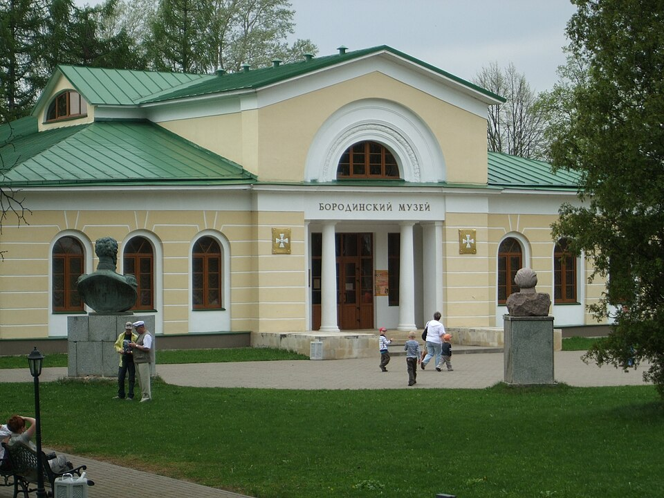

Фотография временно недоступна
История · Бородинское поле
Музей Бородино
Познакомьтесь с историей Бородинского сражения в главной экспозиции музея-заповедника, а затем прогуляйтесь по мемориальному полю. Отметка на карте — главное здание музея у батареи Раевского.